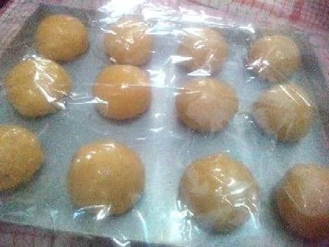

Resep Kue Maryam
Bahan-bahan:
- 250 gr tepung terigu
- 1 butir telur
- 3 sdm margarin, lelehkan
- 100 ml air hangat
- 2 sdm susu bubuk (optional)
- 1/2 sdt garam
- Margarin elelh untuk olesan
- Minyak untuk merendam
Langkah-langkah
- Campur semua bahan roti jadi satu
- Uleni sampai kalis (aku pake tangan) jangan takut jika adonan lengket ya, lumuri tangan sesekali dg tepung (tapi jangan menambahkan tepung) uleni terus sampai adonan kalis

- Kalisnya adonan canai tidak sekalis adonan roti ya, kira2 seperti ini sudah cukup